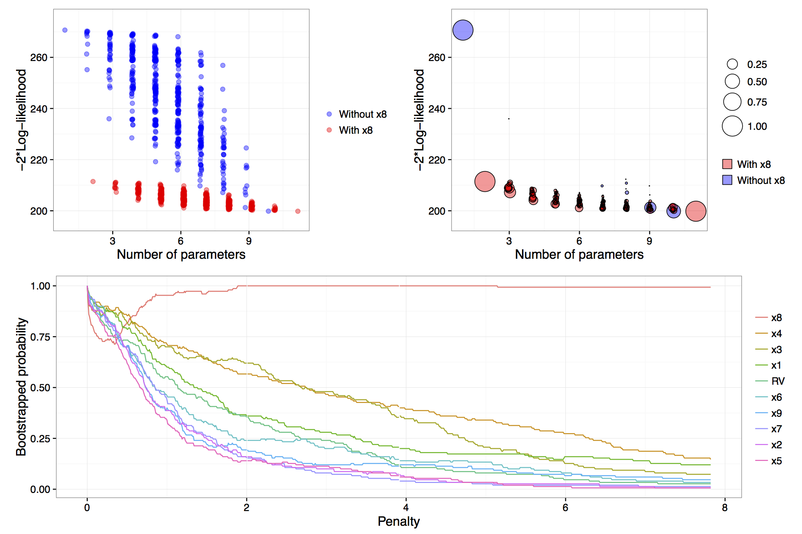

Overview of model stability plots.
In order to generate model stability and variable inclusion plots,
the first step is to generate a vis object using the
vis() function. To generate a vis object for
the artificial data example the fitted full model object along with some
optional arguments are passed to the vis() function.
lm.art = lm(y ~ ., data = artificialeg)
vis.art = vis(lm.art, B = 150, redundant = TRUE, nbest = "all")
Figure: results of calls to
plot(vis.art, interactive = FALSE) with additional
arguments which = "lvk" in the top left,
which = "boot" in the top right and
which = "vip" down the bottom.
The B = 150 argument provided to the vis()
function tells us that we want to perform 150 bootstrap replications.
See Murray et al. (2013) for more detail on the use of
exponential weights in bootstrap model selection. Specifying
redundant = TRUE is unnecessary, as it is the default
option; it ensures that an extra variable, randomly generated from a
standard normal distribution and hence completely unrelated to the true
data generating process, is added to the full model. This extra
redundant variable can be used as a baseline comparison in the variable
inclusion plots. Finally, the nbest argument controls how
many models with the smallest \(\hat{Q}(\alpha)\) for each model size \(k=1,\ldots,p\) are recorded. It can take an
integer argument or specifying nbest = "all" ensures that
all possible models are displayed when the plot methods is called, as
shown in the top left panel of the figure
above. Typically researchers do not need to visualise the entire
model space and in problems with larger numbers of candidate variables
it is impractical to store and plot results for all models. The default
behaviour of the vis() function is to set
nbest = 5, essentially highlighting the maximum enveloping
lower convex curve of Murray et al. (2013).
The simplest visualisation of the model space is to plot a measure of
description loss against model complexity for all possible models, a
special implementation is the Mallows \(C_p\) plot (Mallows, 2000). This is done using
the argument which = "lvk" to the plot function applied to
a vis object. The string "lvk" is short for
loss versus \(k\), the dimension of the
model.
The result of this function can be found in the top left panel of the
figure above. The highlight
argument is used to differentiate models that contain a particular
variable from those that do not. This is an implementation of the
enriched scatter plot of Murray et al.
(2013). There is a clear
separation between models that contain \(x_8\) and those that do not, that is, all
triangles are clustered towards the bottom with the circles above in a
separate cluster. There is no similar separation for the other
explanatory variables (not shown). These results strongly suggest that
\(x_8\) is the single most important
variable. For clarity the points have been jittered slightly along the
horizontal axis, though the model sizes remain clearly
differentiated.
Rather than performing a single pass over the model space and plotting the description loss against model size, a more nuanced and discerning approach is to use a (exponential weighted) bootstrap to determine how often various models achieve the minimal loss for each model size. The advantage of the bootstrap approach is that it gives a measure of model stability for each model size as promoted by Meinshausen & Bühlmann (2010), Müller & Welsh (2010) and Murray et al. (2013).
The weighted bootstrap has two key-benefits over the residual or nonparametric bootstrap: First, the weighted bootstrap always yields observable responses which is particularly relevant when these observable values are restricted to be integers (as in many generalized linear models), or, when \(y\) values are naturally bounded, say to be observed on the interval 0 to 1; Second, the weighted bootstrap does not suffer from separation issues that regularly occur in logistic and other models. The pairs bootstrap also yields observable responses and can be thought of as a special (boundary) case of the weighted bootstrap where some weights are allowed to be exactly zero, which can create a separation issue in logistic models. Therefore, we have chosen to implement the weighted bootstrap because it is a simple, elegant method that appears to work well. Specifically, we utilise the exponential weighted bootstrap where the observations are reweighted with weights drawn from an exponential distribution with mean 1 (see Murray et al., 2013).
To visualise the results of the exponential weighted bootstrap, the
which = "boot" argument needs to be passed to the plot call
on a vis object. The highlight argument can
again be used to distinguish between models with and without a
particular variable. Each circle represents a model with a non-zero
bootstrap probability, that is, each model that was selected as the best
model of a particular dimension in at least one bootstrap replication.
Furthermore, the area of each circle is proportional to the
corresponding model’s bootstrapped selection probability.
The top right panel of the figure above is an example of a model stability plot for the artificial data set. The null model, the full model and the simple linear regression of \(y\) on \(x_8\) all have bootstrap probabilities equal to one. While there are alternatives to the null and full model their inclusion in the plot serves two main purposes. Firstly, to gauge the potential range in description loss and secondly to provide a baseline against which to compare other circles to see if any approach a similar size, which would indicate that those are dominant models of a given model dimension. In the figure above, for model dimensions of between three and ten, there are no clearly dominant models, that is, within each model size there are no models that are selected much more commonly than the alternatives.
A print method is available for vis objects which prints
the model formula, log-likelihood and proportion of times that a given
model was selected as the best model within each model size.
The default minimum probability of a model being selected before it gets
printed is 0.3, though this can be customised by passing a
min.prob argument to the print function.
name prob logLikelihood
y~1 1.00 -135.33
y~x8 1.00 -105.72
y~x4+x8 0.40 -103.63
y~x1+x8 0.27 -104.47
y~x1+x2+x3+x4+x5+x6+x7+x9 0.26 -100.63
y~x1+x2+x3+x4+x5+x6+x7+x9+RV 0.33 -100.51The output above, reinforces what we know from the top right panel of
the figure above. The null model is always
selected and in models of size two a regression of \(y\) on \(x_8\) is always selected. In models of size
three the two most commonly selected models are y~x4+x8,
which was selected 40% of the time and y~x1+x8 selected in
27% of bootstrap replications. Interestingly, in models of size nine and
ten, the most commonly selected models do not contain \(x_8\), these are shown as blue circles in
the plot. We will see in the next section that this phenomenon is
related to the failure of stepwise variable selection with this data
set.